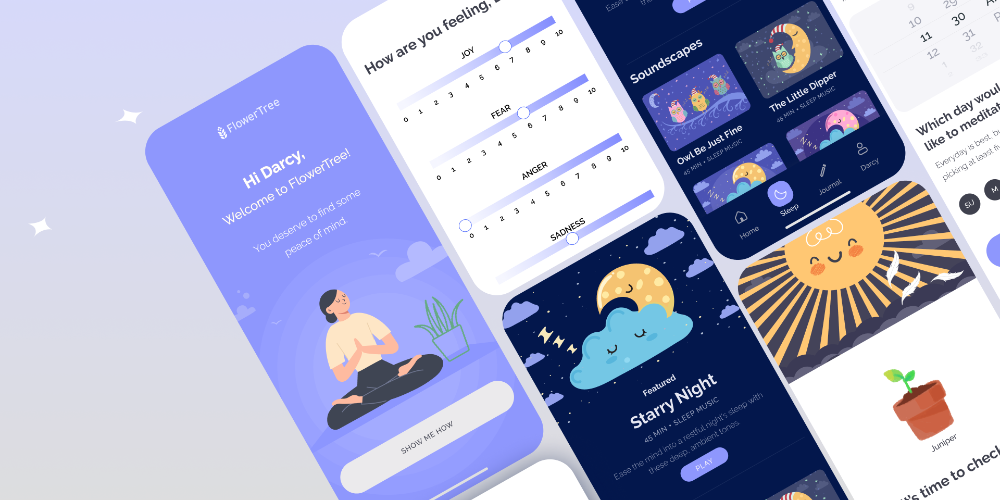

FlowerTree
Grow mindfulness right from your phone!
Through daily check-ins, journal entries, and soundscapes, FlowerTree is there to help you become the best version of yourself. It's a busy world out there and for many—it's busier in their minds.
As the sole UI/UX Designer on the project, I was inspired to create FlowerTree to provide an opportunity for people to implement mindfulness into their daily lives—right from their phones.
